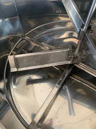

À propos du brassage de la bière
Le brassage de la bière est un processus complexe et fascinant qui transforme des ingrédients simples en une boisson savoureuse. Chez Brass'Art, nous vous accompagnons dans la découverte des différentes étapes du brassage, de la sélection des ingrédients à la fermentation.
Les grandes étapes du brassage
- Maltage : Germination de l’orge pour transformer l’amidon en sucre.
- Brassage : Cuisson du malt avec de l’eau pour créer le moût.
- Houblonnage : Ajout du houblon pour l’amertume et l’arôme.
- Fermentation : Transformation du sucre en alcool par les levures.
- Maturation : Affinage de la bière pour enrichir son goût.
- Conditionnement : Mise en bouteille ou en fût.
Quelques illustrations
